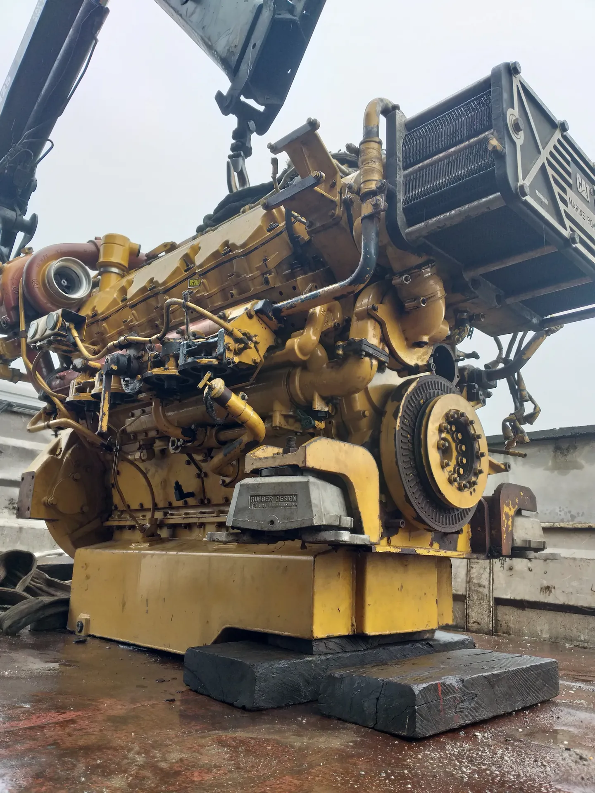
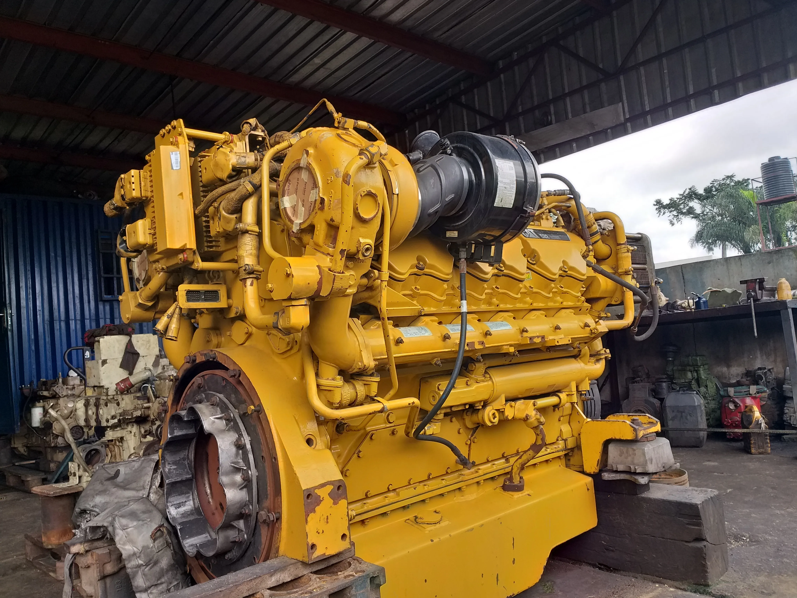
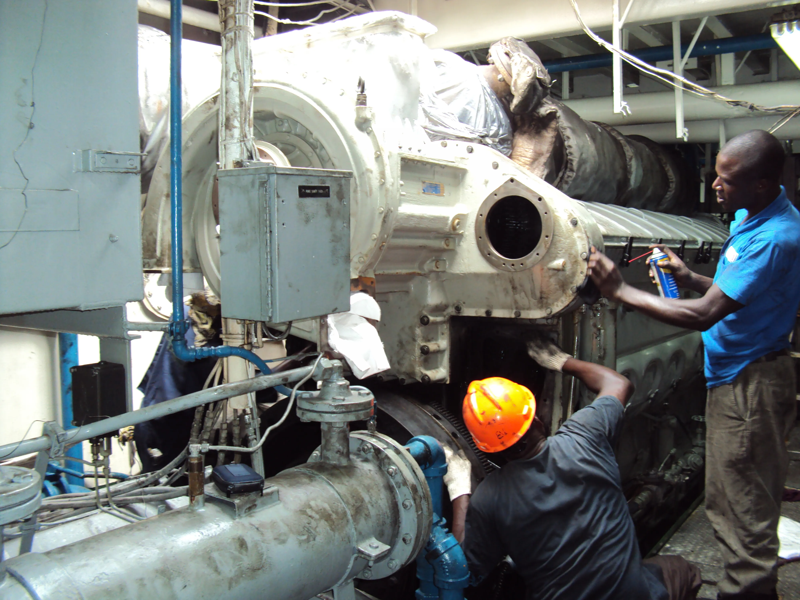
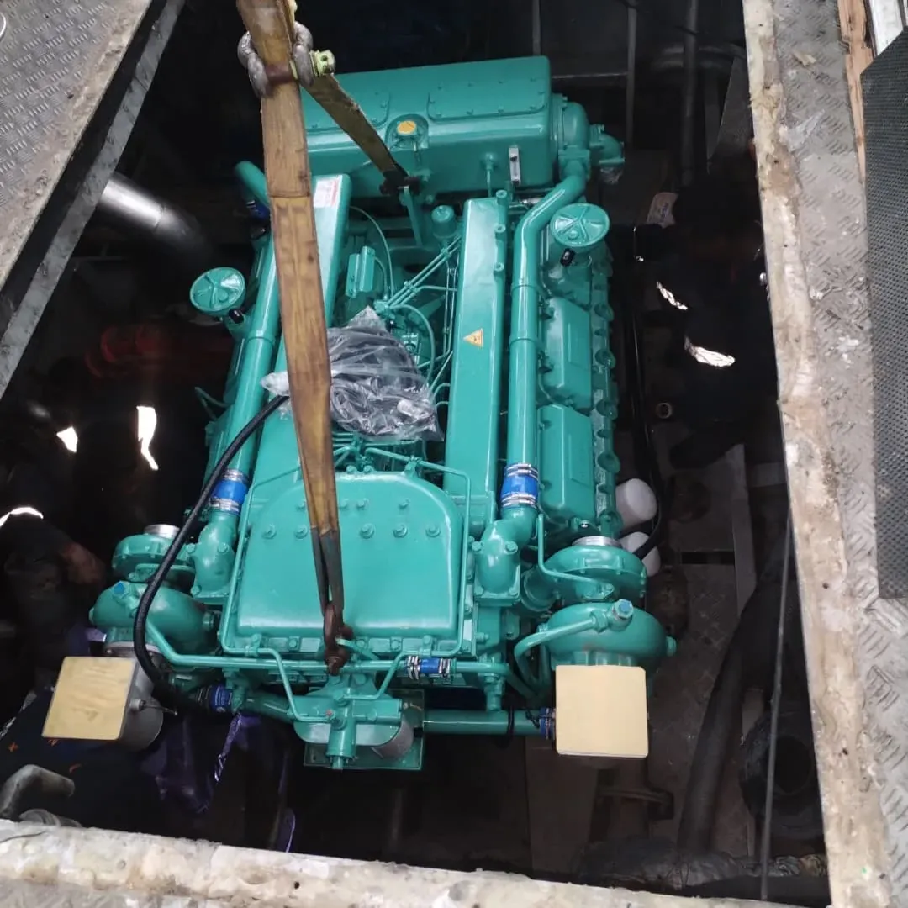
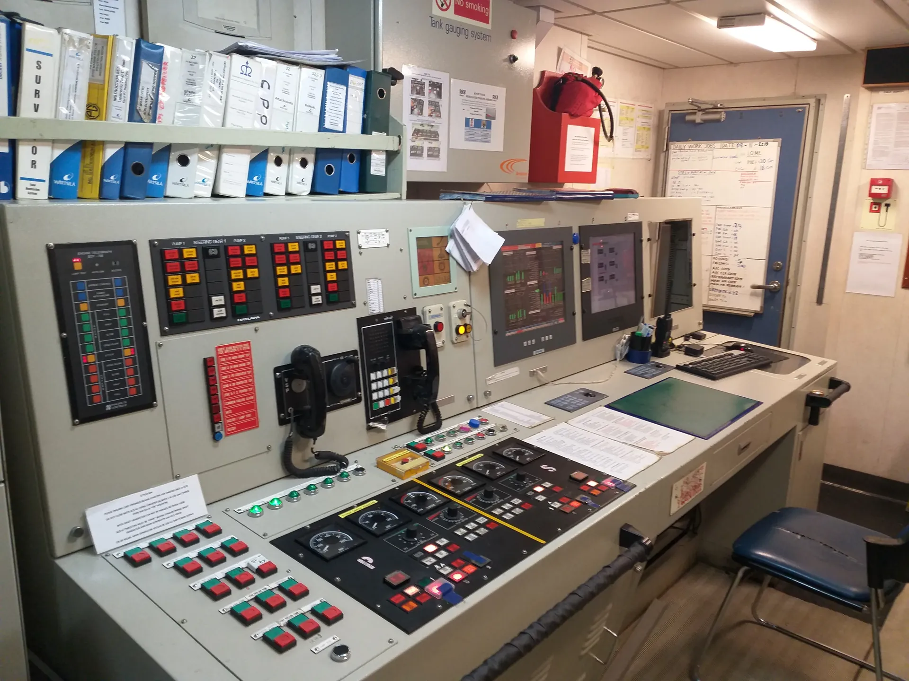

Engine Overhaul
Complete overhaul of a Caterpillar marine diesel engine — teardown, inspection, and rebuild to manufacturer specification.
Kenoc Nigeria Limited provides reliable marine equipment maintenance, engine servicing, and technical support to vessel operators and marine companies operating in Port Harcourt and surrounding areas.
Kenoc Nigeria Limited is a marine and engineering services company based in Port Harcourt, Rivers State. Since 1999, we have provided vessel maintenance, equipment servicing, and technical support to marine operators and oil and gas service companies working in the Port Harcourt harbor and waterways.
Our focus is on keeping vessels operational through routine maintenance, repair work, and reliable technical services. We work with local vessel operators, marine logistics companies, and service providers who need dependable maintenance support.
Learn more about us
Six core services supporting vessel operations in Port Harcourt
Service and repair of pumps, winches, hydraulic systems, and other onboard marine equipment.
Learn moreRoutine maintenance, troubleshooting, and repair of marine diesel engines and propulsion systems.
Learn moreMaintenance and support for auxiliary generators, power distribution, and electrical systems.
Learn moreSourcing and supply of genuine engine parts, spares, and marine and industrial equipment through established supplier networks.
Learn moreComplete installation of new or replacement diesel engines into vessels — from mounting and alignment to commissioning.
Learn moreScheduled inspections and preventive maintenance programs that catch issues early and reduce vessel downtime.
Learn more


A closer look at recent overhauls, installations, and vessel maintenance carried out by our team.

Complete overhaul of a Caterpillar marine diesel engine — teardown, inspection, and rebuild to manufacturer specification.

On-board servicing of engine and auxiliary systems, keeping vessels operational with minimal downtime.

Fitting a replacement marine engine into a vessel — lifting, mounting, alignment, and commissioning.

Servicing and support for engine control room consoles — steering-gear and pump panels, alarms, and monitoring systems.
What makes us a dependable maintenance partner for vessel operators in Port Harcourt.
Operating in Port Harcourt since 1999 with direct knowledge of local vessel operations and harbor conditions.
Our team has hands-on experience with the marine equipment and engines commonly used in the Niger Delta region.
We prioritize getting vessels back in operation with minimal downtime through responsive maintenance support.
Established relationships with suppliers enable us to source parts and equipment efficiently.
Contact us to discuss your vessel maintenance requirements or request service information.
Get in Touch